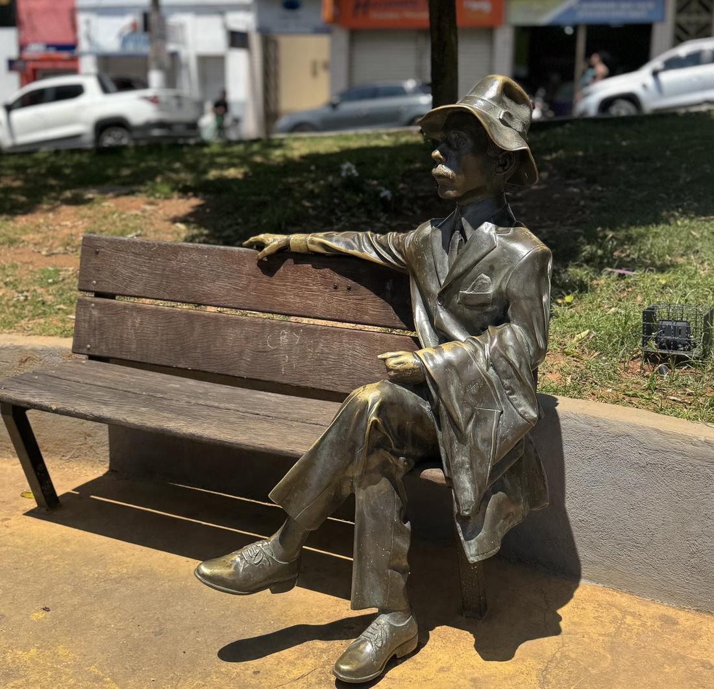
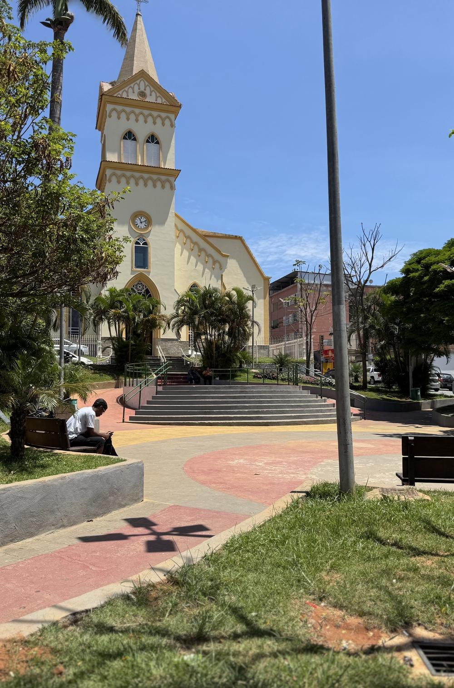

Por que Lula
O que melhorou na vida das pessoas, com fonte. Busque pelo assunto que importa pra quem você quer convencer.
Flávio: o que pesa
O que ele defende, o que a campanha dele propõe e o que ele não explica. Tudo com fonte.
Boatos: não compartilhe
Isso circula por aí, mas não é verdade ou não está no plano dele. Repetir só ajuda o outro lado a desmentir a gente.
Fontes: plano de governo registrado no TSE, conferido pela Jovem Pan (07/10/2026); votação da PEC 221/2019 no Senado (14/10/2026).

Votos para presidente
% dos votos válidos, como o TSE calcula.
Comparado com 2022
Lula contra o candidato do Bolsonaro, em % dos votos válidos.
Idade do eleitorado
Quantos eleitores de cada idade votam aqui.
Mulheres e homens
Eleitores aptos, pelo cadastro do TSE.
Locais de votação
Toque num local pra ver as seções dele. Toque no título da coluna pra ordenar.

O tamanho do jogo
Onde focar
Escolha o que procurar. Toque num local pra abrir o resultado dele.
Travou na conversa? Me chama que eu te ajudo!
Manda no direct a dúvida ou a desculpa que você ouviu. A gente responde com dado oficial.
5 passos pra virar um voto
- Escolha 1 pessoa
Quem não foi votar no 1º turno, quem anulou ou quem tá em dúvida. Bolsonarista convicto? Não gaste energia.
- Pergunte antes de falar
“O que mais te preocupa hoje?” E escute de verdade. Quem se sente ouvido escuta de volta.
- Fale de direitos, com dado
Trabalho, salário, remédio, escola dos filhos. Use as respostas prontas abaixo.
- Sem briga, sem humilhar
Ninguém muda de voto se sentindo burro. Esquentou? Mude de assunto e volte outro dia.
- Feche com um pedido
“Vai votar dia 25? Vote Lula.” E no sábado, dia 24, mande uma mensagem lembrando.
Respostas prontas
O que você vai ouvir e o que responder. Tudo com fonte.
“Não votei no 1º turno. Posso votar no 2º?”
Pode. Cada turno é uma eleição separada. A falta do 1º turno se justifica depois, até 3 de dezembro, pelo app e-Título ou no site do TSE. Quem não justificar paga multa de R$ 3,51.
Aqui, 8.774 pessoas não votaram no 1º turno. Todas podem votar dia 25.
Fonte: TSE
“Vou votar branco ou nulo.”
Branco e nulo não vão pra ninguém. O 2º turno é decidido só pelos votos válidos, então quem anula deixa os outros escolherem por ele.
No 1º turno, 1.618 pessoas daqui votaram branco ou nulo.
Fonte: Constituição Federal, art. 77; TSE
“Política não muda nada na minha vida.”
Em Santos Dumont mudou, e dá pra mostrar:
• 12.149 pessoas pegaram remédio na Farmácia Popular em 2025.
• 2.765 famílias no Bolsa Família em 2026, com 1.288 crianças de até 6 anos recebendo R$ 150 a mais.
• R$ 330,8 milhões do INSS pagos aqui em 2025.
• 815 alunos no Pé-de-Meia em 2026.
Fontes: Ministério da Saúde, MDS, Previdência e MEC (via Casa 13)
“Ganho pouco e pago imposto demais.”
Desde janeiro de 2026, quem ganha até R$ 5 mil por mês não paga Imposto de Renda. Quem ganha até R$ 7.350 paga menos. São mais de 15 milhões de pessoas no país.
Fonte: Lei 15.270/2025
“Remédio tá caro.”
Desde fevereiro de 2025, os 41 remédios da Farmácia Popular são de graça, como os de pressão, diabetes e asma. É só levar a receita e o documento numa farmácia credenciada. O programa foi criado pelo Lula em 2004.
Fonte: Ministério da Saúde
“O Flávio também votou pelo fim da 6x1.”
Votou, e isso é bom. A PEC aprovada no Senado em 14/10 reduz a jornada de 44 pra 40 horas, com 2 folgas por semana e sem cortar salário.
Mas o Flávio assina a PEC 12/2026, do coordenador da campanha dele, que cria o trabalho pago por hora: férias, 13º e FGTS proporcionais às horas, sem garantia de 2 folgas.
Fontes: Senado Notícias (14/10/2026); Exame (15/10/2026); Congresso em Foco (06/10/2026)
“Tá tudo caro no mercado.”
O salário mínimo voltou a subir acima da inflação todo ano, por lei. E a reforma tributária aprovada no governo Lula zera os impostos sobre os alimentos da cesta básica nacional, com transição até 2033.
Fontes: Lei 14.663/2023; Lei Complementar 214/2025
“O Lula foi condenado.”
As condenações foram anuladas pelo STF em 2021. O tribunal decidiu que o caso foi julgado no lugar errado e que o juiz Sergio Moro agiu com parcialidade. Hoje o Lula não tem condenação, e por isso a Justiça Eleitoral aprovou a candidatura.
Se a conversa travar aqui, não insista. Volte pro passo 2: pergunte o que preocupa a pessoa hoje.
Fonte: STF, HC 193.726 e HC 164.493 (2021)
Mensagens prontas
Copie ou abra direto no WhatsApp. Troque o que estiver entre colchetes.
Material pra compartilhar
As artes que já saíram na página. Arraste pro lado pra ver todas. Toque pra abrir em tamanho grande e segure o dedo na imagem pra salvar.
Kit Vira Voto
10 conquistas do governo Lula
Quadros do 1º turno e Já pediu um voto?
Dia 25
- Votação das 8h às 17h (horário de Brasília).
- Leve um documento oficial com foto ou o e-Título.
- Quem faltou no 1º turno pode votar normalmente.
- Não sabe o local? Escolha a seção na aba Resultado e veja o endereço.
Pode × Não pode
- Conversar e convidar pra votar
- Mandar conteúdo com fonte
- Levar a própria família pra votar
- Oferecer qualquer coisa em troca de voto
- Dar carona pra quem não é da família no dia
- Espalhar notícia falsa
- Pedir voto na fila ou postar propaganda no dia 25
Código Eleitoral, arts. 299 e 323; Lei 6.091/74, arts. 5º e 11; Lei 9.504/97, art. 39, §5º.